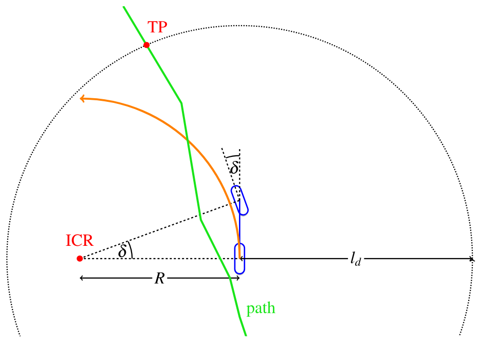
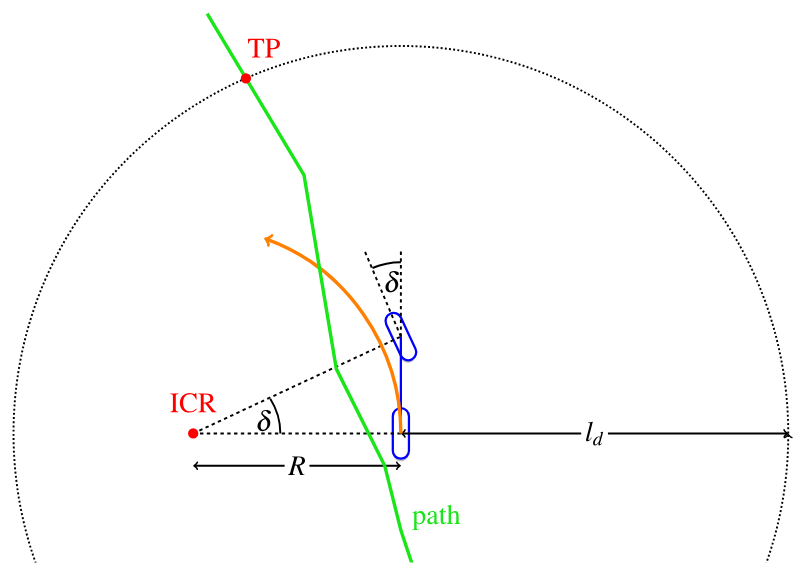
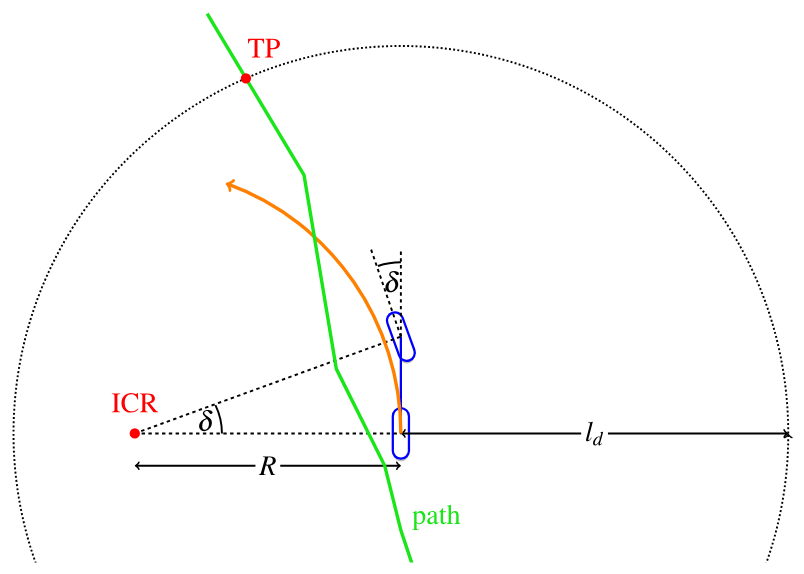
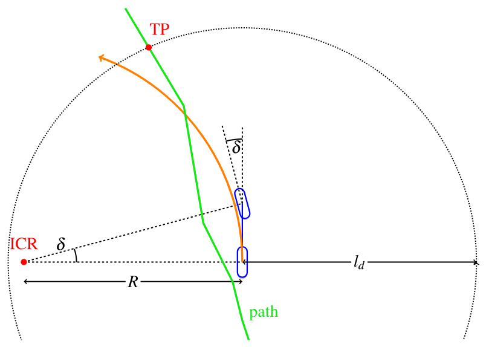
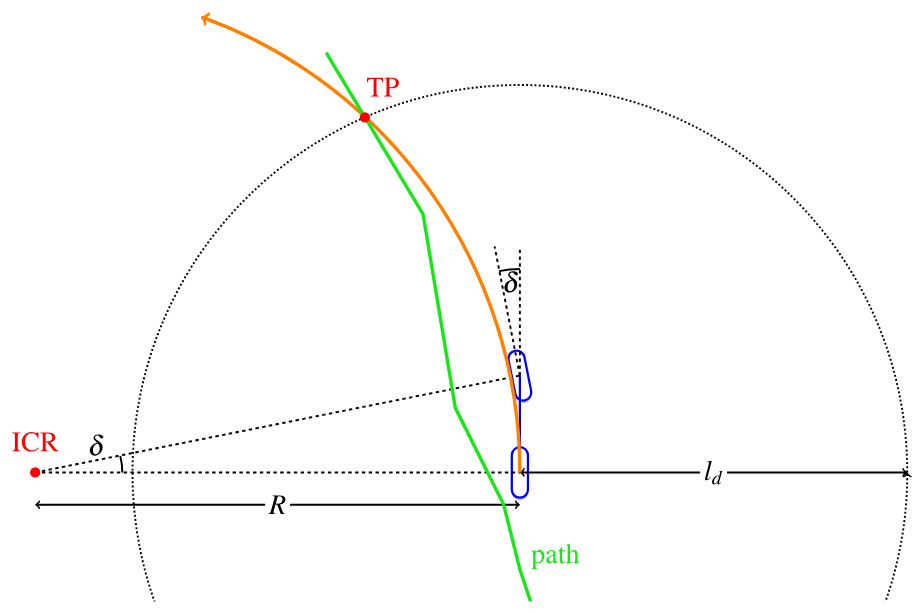
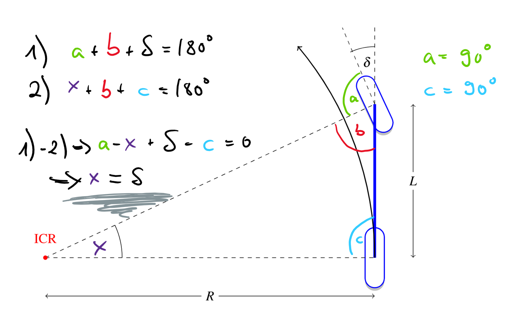

Pure Pursuit#
Geometric lateral controller: path + speed \(v\) → wheel angle \(\delta\). Mode
ppin Phone ADAS. Geometry follows AAD (CC BY 4.0).
Problem statement#
We want \(\delta(t)\) so the car follows a path \(\{(x_i,y_i)\}\) in meters — lateral control.
Pure Pursuit idea:
Pick a target point (TP) on the path at look-ahead distance \(l_d\) from the rear axle.
Choose \(\delta\) so the kinematic bicycle arc goes through TP.
Примечание
Device frame: \(y\) right-positive. See Coordinates.
Look-ahead#
config |
role |
|---|---|
|
scale \(l_d(v)\) |
|
clamps |
|
small trim |
import numpy as np
def lookahead(v, K_dd=0.8, ld_min=8.0, ld_max=25.0):
"""Defaults match shipped config.json (C++ class defaults are smaller)."""
return float(np.clip(K_dd * v, ld_min, ld_max))
for v in (5, 15, 30):
print(f"v={v:2d} m/s → ld={lookahead(v):.1f} m")
# 5 → 8.0 (hit min), 15 → 12.0, 30 → 24.0
Small \(l_d\): aggressive, chatty. Large \(l_d\): smooth, cuts corners.
Shipped phone config: pp_k_dd=0.8, pp_ld_min=8, pp_ld_max=25.
Geometry#
{kind=link}

Рис. 5 Wrong \(\delta\): bicycle arc misses TP.#
Try different \(\delta\) until the arc hits TP (AAD interactive figures):




Full derivation of \(\delta\)#

Рис. 6 Magenta triangle: ICR, rear axle, TP.#
Notation
\(l_d\) — distance rear axle → TP.
\(\alpha\) — angle between body \(x\)-axis and the ray to TP.
\(R\) — bicycle turning radius (rear axle about ICR).
\(L\) — wheelbase.
Step 1. TP lies on the circle of radius \(R\) about ICR, so triangle ICR–rear–TP is isosceles: the two sides to ICR both equal \(R\). Call base angles \(\gamma_2=\gamma_3\).
Step 2. From the figure, \(\gamma_3 + \alpha = 90°\), hence \(\gamma_2 = \gamma_3 = 90° - \alpha\).
Step 3. Angles in a triangle sum to \(180°\):
Step 4. Law of sines:
Use \(\sin(90°-\alpha)=\cos\alpha\) and \(\sin(2\alpha)=2\sin\alpha\cos\alpha\):
Step 5. Bicycle (previous chapter): \(\delta = \arctan(L/R)\). Substitute \(R\):
{kind=link}

Рис. 7 Same law in a simpler sketch.#
Numerical example#
Fix \(L=2.64\) m, \(l_d=8\) m, TP at \((x,y)=(7.5,\ 2.8)\) m (device frame, \(y\) right+).
With steer_ratio=15.7, \(|\mathrm{SWA}|\approx 13.4\times 15.7 \approx 210°\) before clamps — real stacks saturate; the formula is the unsaturated geometric request.
import math
def pure_pursuit_delta(x_tp, y_tp, ld, L=2.64):
alpha = math.atan2(y_tp, x_tp)
delta = math.atan(2.0 * L * math.sin(alpha) / ld)
return delta, alpha
delta, alpha = pure_pursuit_delta(7.5, 2.8, ld=8.0)
print(f"alpha={math.degrees(alpha):.1f} deg, delta={math.degrees(delta):.1f} deg")
# Sign check: TP on the other side → opposite delta
d_left, _ = pure_pursuit_delta(7.5, -2.8, ld=8.0)
print(f"delta for y=-2.8: {math.degrees(d_left):.1f} deg (sign flips)")
# Look-ahead vs speed (config-style)
import numpy as np
def lookahead(v, K_dd=0.8, ld_min=8.0, ld_max=25.0):
return float(np.clip(K_dd * v, ld_min, ld_max))
print("ld at 15 m/s:", lookahead(15))
Pure Pursuit algorithm (each vision frame)
\(l_d = \mathrm{clip}(K_{dd} v, l_{d,\min}, l_{d,\max})\).
Find TP on the path at distance \(\approx l_d\).
\(\alpha = \mathrm{atan2}(y_{\mathrm{TP}}, x_{\mathrm{TP}})\).
\(\delta\) from (1).
\(\delta\to\) SWA (
steer_sign, optional vehicle model) → PID → HCA.
Toy closed loop (straight path, offset start)#
Path = the \(x\)-axis. Car starts at \(y=1\) m with \(\theta=0\). Pure Pursuit should steer back.
import math
import numpy as np
def step(x, y, th, v, delta, L=2.64, dt=0.05):
x += v * math.cos(th) * dt
y += v * math.sin(th) * dt
th += v * math.tan(delta) / L * dt
return x, y, th
def pp_toward_x_axis(x, y, th, v=12.0, L=2.64, K_dd=0.5):
"""TP = point ld ahead on the x-axis, in vehicle frame."""
ld = float(np.clip(K_dd * v, 3.0, 20.0))
# world TP
x_tp_w, y_tp_w = x + ld, 0.0
# into vehicle frame
dx, dy = x_tp_w - x, y_tp_w - y
x_v = math.cos(th) * dx + math.sin(th) * dy
y_v = -math.sin(th) * dx + math.cos(th) * dy
alpha = math.atan2(y_v, x_v)
return math.atan2(2 * L * math.sin(alpha), ld)
x, y, th = 0.0, 1.0, 0.0
for i in range(80): # 4 s
delta = pp_toward_x_axis(x, y, th)
x, y, th = step(x, y, th, v=12.0, delta=delta)
print(f"after 4 s: y={y:.3f} m (should be near 0), yaw={math.degrees(th):.1f} deg")
Integration#
vision/lanes + vehicle/state → PurePursuit → δ → SWA → LatControlPID → Panda → HCA_01
"lane_keep_controller": "pp". Road default is usually fp.
Common mistakes#
Wrong \(y\) sign (device vs ISO).
Forgetting
steer_sign = -1.Tuning on thermal 3 Hz windows.
No understeer model at \(v\sim 20\) m/s.
Exercise#
Change
K_ddin the toy loop: how does settling of \(y\) change?Put TP at \((8, 0)\) vs \((8, 3)\): print \(\delta\).
Bag sweep:
bag_config_sweep.pyPareto |CTE| vs |\(\Delta\)SWA|.